高危工作环境中人员安全装备佩戴检测系统
项目背景
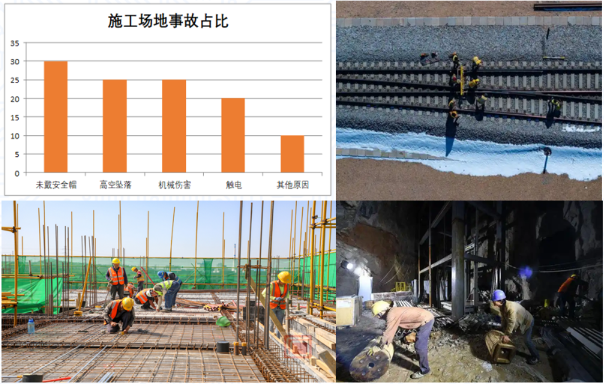随着工业化和城市化的快速发展，高危行业（如建筑、电力、矿山、危废处置等）的安全事故频发，人员安全防护问题备受关注。据统计，我国每年因未正确佩戴安全装备（如安全帽、绝缘手套等）导致的事故占工业事故的30%以上，要想预防此类事故的发生，就得做到提早发现、提前预防、尽快处理。基于以上背景，本项目的主要目的是设计并实现一个基于深度学习目标检测技术的高危环境中施工人员安全装备佩戴检测系统。
系统设计方案
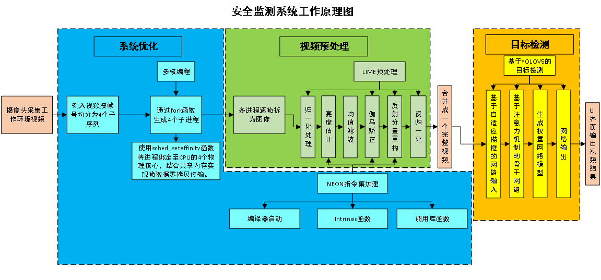
本项目采用“多进程预处理+主进程协同”的异构架构，核心创新点在于将计算密集型任务（LIME图像增强）与模型推理任务（YOLO）解耦。具体流程如下：通过工业级摄像头获取视频，存入系统内存中。主进程调用fork函数生成4个子进程，通过多核并行化与算法-硬件协同优化，有效解决了传统单线程处理中的计算瓶颈问题，为高危环境下的工作人员安全装备佩戴检测提供了可靠的工程化解决方案。
技术方案
系统平台
硬件平台
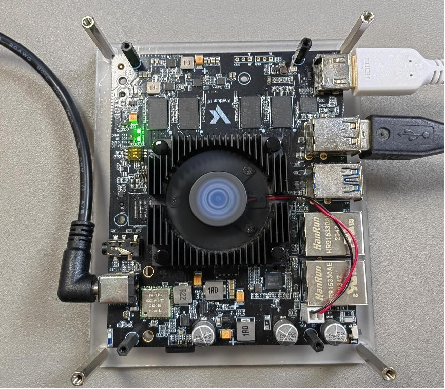
本项目设计的高危工作环境中人员安全装备佩戴检测系统整体基于飞腾派开发板实现的，主板处理器采用飞腾定制四核处理器，该处理器兼容ARM V8指令集，包含2个FTC664核和2个FTC310核，其中FTC664核主频可达1.8GHz，FTC310核主频可达1.5GHz。主板板载64位DDR4内存，有2G和4G两个版本，支持SD或者eMMC外部存储。主板板载WiFi和蓝牙，陶瓷天线，可快速连接无线通信。另外还集成了大量外设接口，包括双路千兆以太网、USB、UART、CAN、HDMI、Audio等接口，集成一路miniPCIE接口，可实现AI加速卡与4G、5G通信等多种功能模块的扩展。
开发板的硬件规格参数如下：
（1）CPU：飞腾四核处理器，ARMV8架构，2×FTC664@1.8GHz+2×FTC310@1.5GHz。
（2）内存：64 位DDR4，分2G版本和4G版本。
（3）音频：3.5mm 耳机口音频输出。
（4）USB ：1×USB3.0 host，3×USB2.0 host。
（5）HDMI输出接口：1个。
（6）网口：板载2路千兆以太网口。
（7）PCIe：1×Mini-PCIe，支持 AI、5G\4G 等模组
（8）蓝牙：板载蓝牙BT4.2/BLE4.2
（9）WiFi：板载2.4G + 5G 双频WIFI
（10）4G/5G：可通过miniPCIE扩展实现
（11）AI 加速：可通过miniPCIE扩展实现（12）板载RTC芯片：1个。
（12）UART：1×调试串口+2×MIO（多功能IO，可配置为UART模式）
（13）I2C：2+2×MIO（多功能IO，可配置为I2C模式）
（14）I2S：1 路
开发环境
本系统配置的软件环境如下：
（1）操作系统：ubuntu20.04操作系统
（2）Python及配套依赖库版本：Python 3.9.1，pip 25.1.1，torch 1.8.1
（3）Opencv版本：3.4.14
（4）GCC版本：9.4.0
（5）G++版本：9.4.0
（6）Qt版本：5.6.1
（7）Cmake版本：3.20.0
（8）YOLO版本：YoloV5
技术路线
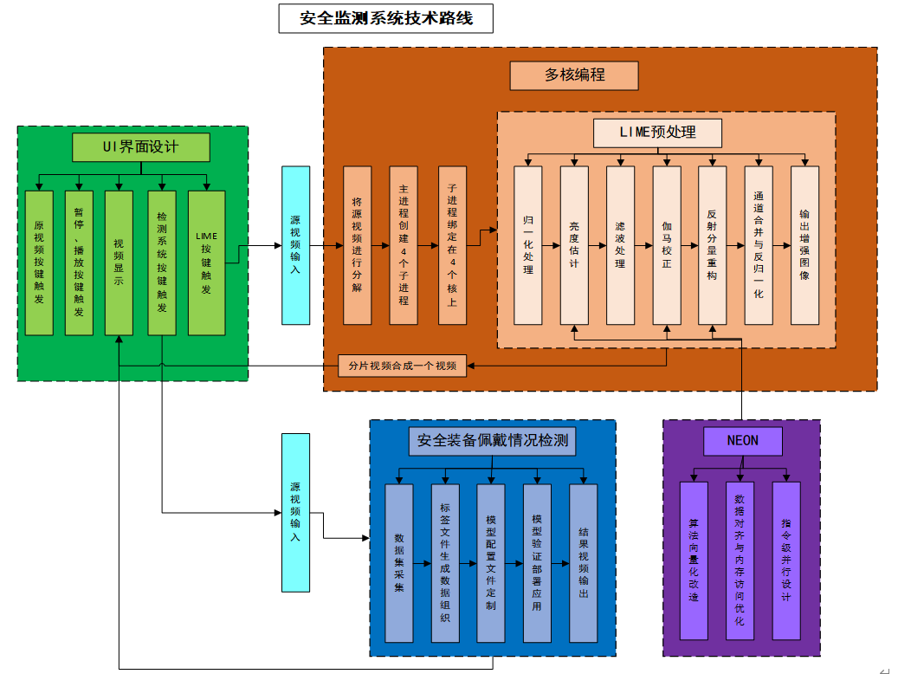本项目针对高危工作环境中光照不均、性要求高、计算资源受限等核心问题，提出“多核并行预处理-自适应检测模型-硬件加速优化”三位一体的技术路线。首先搭建基于工业摄像头与边缘计算平台的多源数据采集系统，获取工作环境的高清视频流，通过视频逐帧拆分与多进程绑定技术实现图像处理任务的分布式加速；其次，基于LIME（Low-light Image Multi-scale Enhancement）算法构建光照自适应增强模块，结合伽马校正与Retinex理论优化低照度图像质量；接着，开发改进型YOLOv5检测模型，引入注意力机制与动态锚框生成策略，提升主体目标的特征提取能力；最后，通过NEON指令集与TensorRT推理引擎实现算法-硬件协同加速，完成检测结果的可视化输出与性能验证。本技术路线将围绕图所示的架构展开，具体分为以下几个关键阶段：
LIME预处理
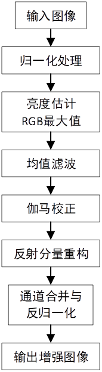本项目针对在监控、隧道巡检、夜间巡检等场景中，视频常因光照不足的问题，拟采用LIME（Low-light Image Multi-scale Enhancement）算法对视频数据进行预处理，LIME算法是一种基于Retinex理论的多尺度光照估计方法，旨在通过分离光照分量与反射分量来增强低光照图像的对比度与细节。其具体的技术流程图如下。
安全装备佩戴情况检测
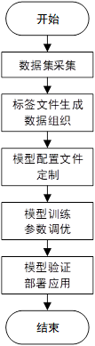
本项目为解决传统人工巡查效率低、易遗漏等问题，构建了一套基于人工智能的安全装备佩戴情况检测流程，通过系统化数据采集、标注、模型训练及部署，实现对工人是否佩戴安全帽的、精准识别。具体流程如上图
UI界面设计
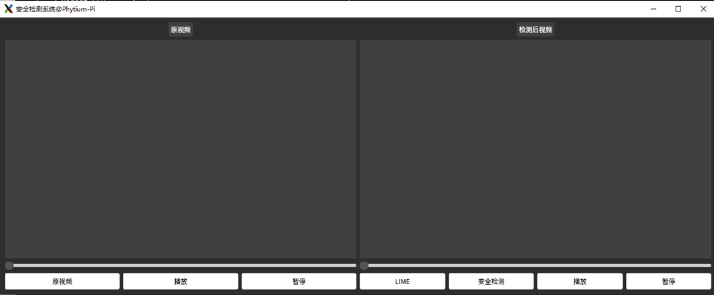 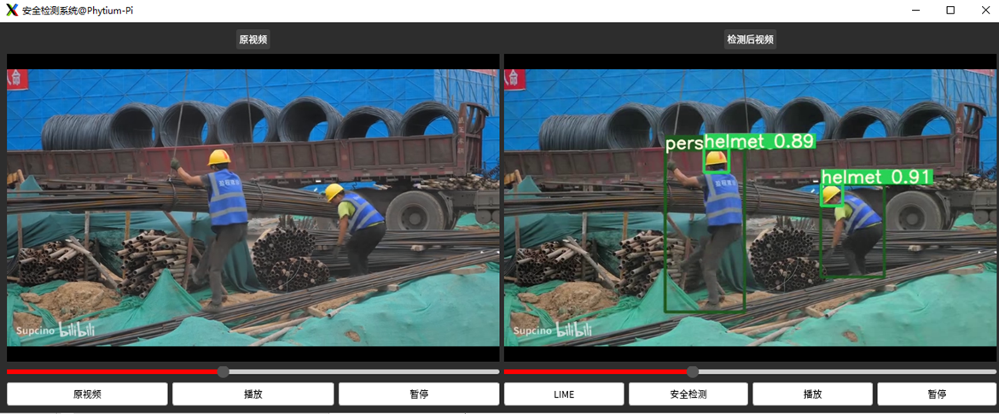本项目的图形化界面设计以监控施工现场人员安全装备佩戴情况为核心，通过双通道视频展示与交互式操作实现全流程可视化管理。界面整体采用简洁直观的布局，左侧窗口显示摄像头采集的原始视频流，支持拖动进度条快速定位播放位置；右侧窗口则同步呈现AI算法处理后的检测结果，以边界框标注人员与安全装备，直观区分安全状态。在交互设计层面，基础控制功能包含“原视频”按钮用于选择本地视频或摄像头源，以及“播放/暂停”按钮精准控制视频状态，并支持进度条跳转；检测功能通过点击“安全检测”按钮触发深度学习模型分析当前帧，结果叠加至右侧窗口；此外，增强功能集成“LIME”按钮，可对低光照画面进行增强优化识别效果，而双通道独立控制设计则允许两侧视频分别操作，便于对比原始与处理画面差异。技术实现上，系统基于Qt框架开发，确保跨平台兼容性，并通过多线程架构分离视频解码与算法推理任务，保障处理流畅无卡顿。该设计通过直观的视觉反馈与人性化的操作逻辑，帮助管理人员高效执行安全监管，显著降低人工巡查成本，同时提升施工现场的安全执行效率与风险预警能力。
系统优化
多核编程
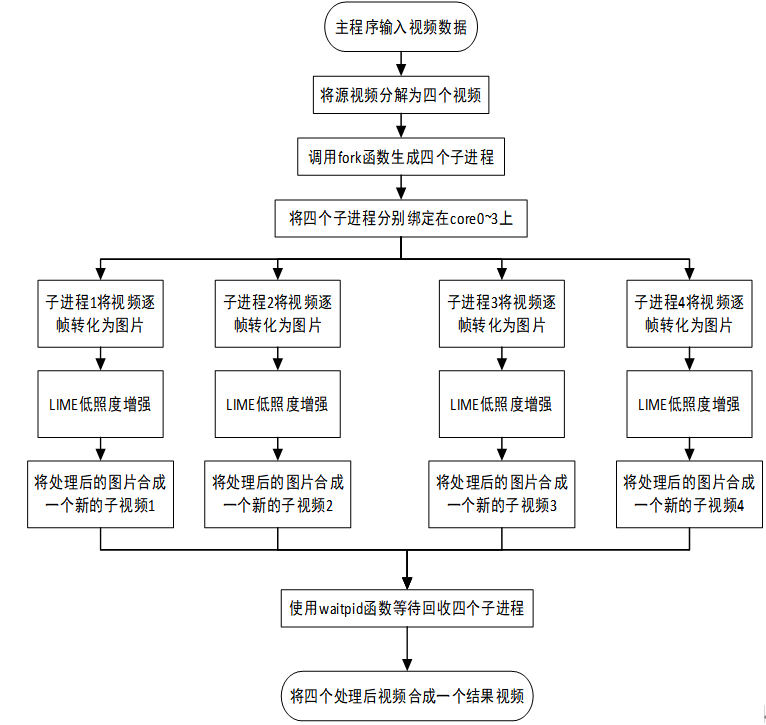本项目通过多核并行计算技术，在多个方面展现出显著优势：通过任务拆分大幅缩短整体处理时间，充分挖掘现代处理器的硬件潜能，降低多任务协作中的资源消耗，并结合底层算法优化实现效能倍增。其核心实现逻辑可分为以下阶段：
主程序首先对原始视频文件进行智能分割，根据内容长度将其均匀划分为四个独立处理单元。这种分段策略为后续并行化处理奠定了基础。
借助系统级多任务处理机制，程序创建四个独立执行单元，通过智能分配策略确保每个单元运行在独立的物理计算核心上。这种设计既避免了计算资源争抢，又保证了各任务模块的独立运行环境。
每个独立执行单元对其分配的视频片段进行深度加工：先将动态影像逐帧转换为静态图像序列，运用专用图像增强算法对每帧画面进行画质提升处理，最后将优化后的图像序列重新编码为高质量视频流。各处理单元在独立计算核心上同步运转，形成高效并行的处理网络。
所有独立单元完成处理后，主程序通过智能合并机制将四个优化后的视频片段无缝拼接，最终生成完整的增强版视频文件。这种模块化处理方式既保证了处理效率，又确保了最终成果的完整性。
通过这种分层递进的设计架构，项目实现了硬件资源的最大化利用与处理流程的深度优化，在保证输出质量的前提下，将整体处理效率提升至传统单线程模式的数倍水平。具体的流程图如下：
NEON
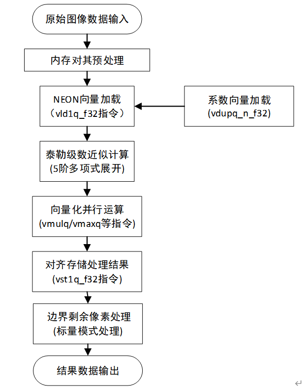本项目通过NEON指令集的向量化计算能力，将图像处理中的关键步骤（如亮度估计、滤波、幂函数计算）从逐像素操作升级为批量处理，显著提升了算法效率。传统图像处理算法通常采用逐像素操作模式，而本方案创新性地采用批量数据处理方法，使得亮度分析、滤波增强、非线性变换等关键步骤能够同步处理多个像素单元，整体处理效率实现跨越式提升。这种优化在嵌入式设备、移动端应用等场景中尤为重要，能够在有限功耗下提供更强大的处理能力。
系统测试
LIME测试结果
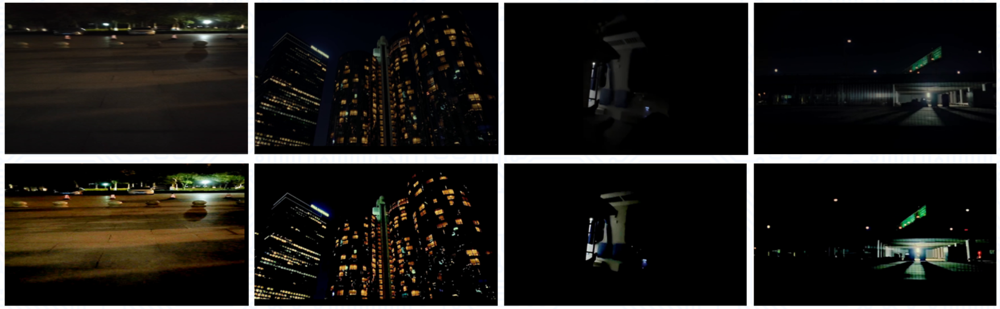LIME预处理效果展示：
针对四类典型场景的处理结果显示，算法在显著提升全局亮度的同时有效保留了图像细节与真实质感，无论是复杂光影的室内环境还是大尺度城市夜景，均保持自然色温与空间层次，处理后的图像既满足视觉可读性，又为后续目标检测等任务提供了高保真输入，适用于安防等低照度场景的分析需求。
NEON指令集测试
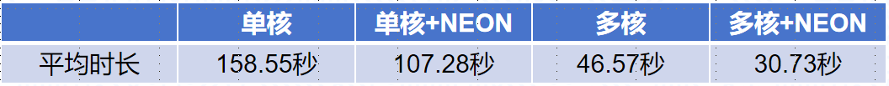试验条件：
本实验选取10段不同场景的样本视频作为测试素材，每段视频规格统一设置为1280×720分辨率、30帧/秒帧率及20秒时长。测试结果如下表所示
结论：
由测试结果得知，单核场景平均时间从158.55s降至107.28s，多核+NEON进一步优化至30.73s。NEON通过单条指令同时处理多个数据单元，将核心算法的运算效率提升约30%-35%，结合多核架构，系统在保障检测精度的同时，实现了高吞吐量、低延迟的安全装备合规性监测，为复杂工业环境中的实时视觉分析提供了可靠的技术支撑。
安全装备佩戴情况检测功能测试与分析
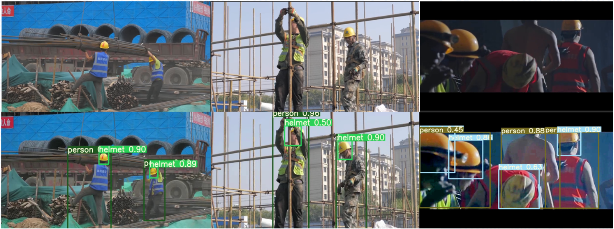基于YOLO模型的裂缝检测效果展示：
如图所示为安全检测效果图，可以看出，本系统可以达到智能识别图像中的工作人员与安全帽，并且从第三组对比图中可以看出，LIME预处理算法可以有效的提升在光照不充足的场景下的检测效果。
创新点
（1）LIME预处理低照度增强算法优化
提出基于NEON指令集的LIME加速方案，针对ARM架构进行向量化重构，突破昏暗工作环境下处理的性能瓶颈。
（2）多核编程
创建四个子进程，将子进程绑定在飞腾派的四个核上，缩短了程序运行的时间，提高了系统的效率。
（3）使用YOLOv5神经网络模型
使用基于YOLO神经网络模型对于危险工作环境中人员装备佩戴进行检测，是系统能够智能、快速识别。
系统整体运行示例图
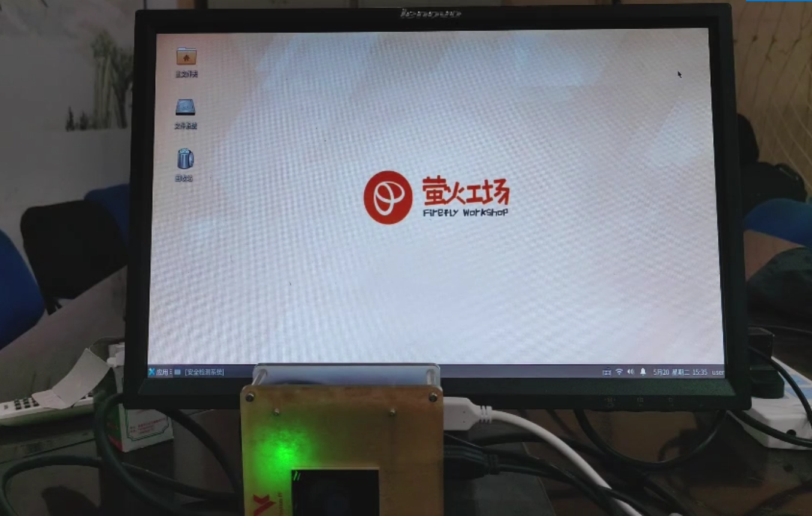